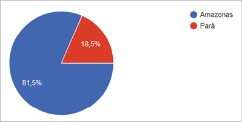
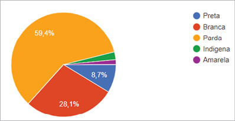
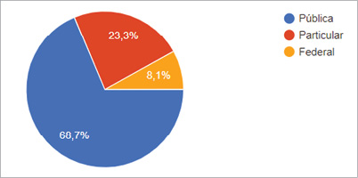
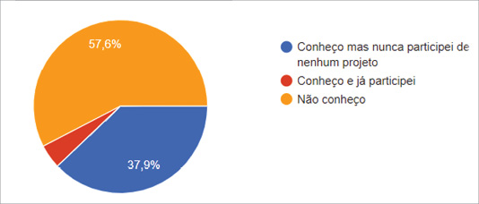
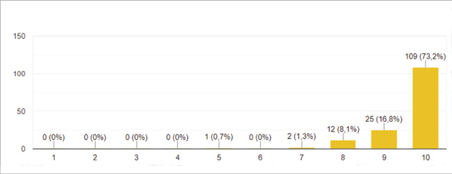
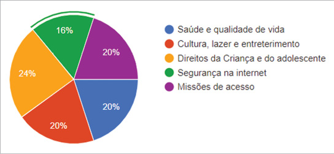
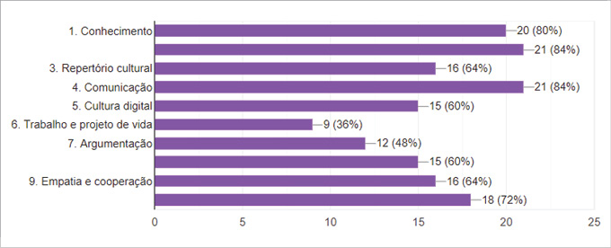
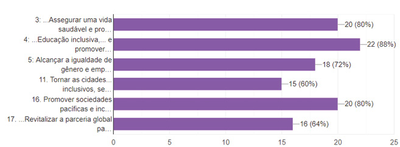
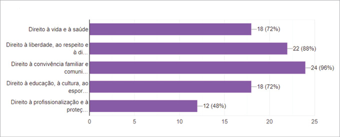

Para que la participación tenga lugar de manera efectiva esta debe respetar el entorno en el que se piensan e implementan las propuestas y agendas políticas, y también cómo la niñez y adolescencia, en un contexto sociocultural específico, comprenden y ejercen su derecho a la participación. El estudio del taller “Empoderamiento Niñas” apunta en esta dirección, hace referencia a la ciudadanía y las desigualdades de género, pero también tiene foco al proceso por el cual adolescentes y comunidades adquieren las competencias necesarias para comprender las cuestiones sociales en el que viven, aumentando sus capacidades para evaluar tanto las decisiones tomadas desde los organismos públicos como la necesidad de plantear alternativas.
Las nuevas tecnologías se han convertido en el eje de la forma en el que los adolescentes participan y se desarrollan en una diversidad de actividades políticas, sociales e individuales. Para mayor contexto, los indicadores de TIC Kids Online Brasil 2017 revelan un crecimiento relevante en el consumo de noticias en línea por niños y adolescentes brasileños de 9 a 17 años: 51% de los jóvenes conectados leyeron y/o visitaron noticias por internet. En 2013, esta proporción era sólo del 34%. En lo que se refiere al acceso a la información, otra actividad común identificada fue investigar en internet, ya sea para trabajos escolares (76%), por curiosidad o voluntad propia (64%) (CGI.br, 2017). Frente a esta “TIC de participación ciudadana” aparecen aquellas que pretenden aumentar las competencias de la ciudadanía a la hora de exigir una mayor transparencia y rendición de cuentas tanto a las administraciones públicas como a los representantes políticos de lo público.
Como hemos señalado en los capítulos anteriores, las participaciones de adolescentes en las TIC proponen soluciones para necesidades de la ciudadanía. Estas necesidades son de diferentes tipos, respondidas por el desarrollo de capacidades y habilidades de la juventud, y otras son nuevas herramientas que la propia sociedad civil aporta para mejorar el entendimiento de los propios sistemas políticos y para ofrecer nuevas oportunidades de participación con el objetivo de integrar a las instituciones públicas en un nuevo proceso deliberativo.
Debido a la emergencia causada por la pandemia de Covid-19, el Fondo de las Naciones Unidas para la Infancia (UNICEF) y el Centro Internacional de Cooperación para el Desarrollo (Cintercoop)1 proponen una serie de actividades virtuales para promover el empoderamiento de las niñas en los municipios Belém (Pará) y Manaus (Amazonas). Respetando las recomendaciones de la Organización Mundial de la Salud (OMS) para el aislamiento social, todas las actividades se llevarán a cabo en línea.
Las niñas y adolescentes participaron en misiones durante dos meses con el fin de desarrollar habilidades, adquirir más conocimiento sobre sus derechos, contribuir al ejercicio de la democracia y mejorar las políticas públicas dirigidas a las niñas en la Amazonía. Las adolescentes que participan del proyecto Empoderamiento de Niñas2 tienen entre 12 y 18 años.

Gráfico 1. Adolescentes que participan del proyecto Empoderamiento de
Niñas por estado. Fuente: UNICEF/CINTERCOOP

Gráfico 2. Adolescentes que participan del proyecto Empoderamiento de
Niñas por orígen étnico. Fuente: UNICEF/CINTERCOOP
La propuesta del proyecto es calificarlo a través de un juego digital que propone misiones a través de WhatsApp y que se puede cumplir desde el hogar utilizando los recursos básicos del teléfono celular (foto/video/audio) grabando y enviando los resultados de cada misión realizada.
En el contexto nacional, los indicadores de la encuesta de TIC Kids Online Brasil marcaron que, “en 2017, el 85% de los niños y adolescentes de 9 a 17 años eran usuarios de internet, lo que corresponde a 24,7 millones de usuarios en Brasil. Para acceder a la red, el 93% de estos niños y adolescentes usaron el teléfono celular, y el uso exclusivo de este dispositivo para acceder a internet alcanzó el 44%” (CGI, 2018: 122). Igualmente, según el estudio, “considerando los diferentes tipos de uso que los niños y adolescentes establecen en el entorno en línea, los centros de investigación parte del análisis de su sexta edición sobre las actividades que la población de 9 a 17 años realiza en internet, especialmente aquellas que se relacionan con la comunicación, la participación cívica y la educación. Los resultados de la encuesta indican que el predominio de las actividades relacionadas con la comunicación y el entretenimiento sigue siendo, entre ellas: enviar mensajes instantáneos (79%), ver videos en línea (77%), escuchar música en internet (75%) y usar las redes sociales (73%). Aunque las actividades de comunicación y entretenimiento son predominantes, es posible identificar nuevas oportunidades para las prácticas en línea, como las que consideran la participación social, la educación y el acceso a la información” (CGI, 2018: 25-26).
En el contexto global, un estudio de la UTI (2019) indica que el 97% de la población mundial ahora tiene acceso a una señal celular y el 93% al alcance de una red 3G o superior. En las Américas, Asia-Pacífico y Europa, más del 95% de la población está cubierta por una red de banda ancha móvil 3G o superior. En los estados árabes, este número es del 91%, en la Comunidad de Estados Independientes el 88%; y en África 79%. De los 85 países que proporcionaron datos sobre la propiedad de teléfonos celulares, 61 tienen una mayor proporción de hombres con teléfonos móviles que las mujeres. De los 24 países restantes donde existe la paridad de género en este factor, o donde más mujeres tienen teléfonos celulares que hombres, Chile es el país que tiene la mayor brecha digital de género a favor de las mujeres, con un 12%.
Las gestoras y gestores de políticas públicas en educación, salud y asistencia social, entre otros temas que impactan el desarrollo de niñas, niños y adolescentes, participaron en una clase virtual de 10 horas en internet, enfocados en prevenir la violencia contra las niñas en internet. El curso es ofrecido por UNICEF en asociación con Safernet Brasil y tiene como objetivo ayudar a estos profesionales a adquirir las habilidades necesarias para hacer frente a posibles situaciones de violencia en línea contra las niñas asegurando que los casos se remitan a los servicios adecuados.
Por cada misión cumplida, recibieron una cantidad de recursos (Gold) que se pueden cambiar por premios del juego que las participantes elijan y también una cantidad de experiencia (XP), que se utilizó para evaluar el rendimiento y aprendizaje de las niñas y adolescentes. El taller fue completamente gratuito y sus participantes no tuvieron ningún costo para completar las misiones. Los premios que adquirieron con el Gold en el juego mismo se enviaron directamente por correo, también sin costo.
Teniendo en cuenta este momento de aislamiento social, el proyecto Empoderamiento de Niñas trae muchas propuestas para ejercer la ciudadanía y aprender jugando, donde sea que estén las niñas y adolescentes. Esto se da especialmente en el contexto de ocupación de espacios tradicionales, como escuelas, calles, plazas, parques, clubes y universidades que no son completamente seguros. En vista de las predicciones de que la pandemia debería extenderse por meses, la directriz es alentar a las niñas a que puedan jugar, estudiar y ejercer la ciudadanía durante ese período. De ese modo, es esencial explorar las posibilidades que ofrece el ambiente digital para desarrollar actividades que fomenten la participación cívica y el empoderamiento para que las niñas y adolescentes.

Gráfico 3. Tipo de escuela de adolescentes que participan del proyecto
Empoderamiento de Niñas. Fuente: UNICEF/CINTERCOOP.

Gráfico 4. Nivel de conocimiento de actividades de UNICEF en
adolescentes. Fuente: UNICEF/CINTERCOOP.
que participan del proyecto Empoderamiento de Niñas. Consecuentemente, han proliferado las violaciones de derechos basadas en género con mayor frecuencia y crudeza al interior de los hogares, donde tanto mujeres como niños y niñas, víctimas de violencia de género, se encuentran prácticamente en cautiverio con sus agresores teniendo que soportar episodios de violencia física y abusos de carácter sexual, con escasas redes de apoyo o posibilidad de trasladarse a espacios seguros y de contención. Nuevamente, los más afectados son los sectores en situación de vulnerabilidad y condiciones precarias de hacinamiento, empleo, y acceso a servicios básicos. El aumento en las cifras en los distintos países es alarmante, tanto así que deben sobrevivir no solo al Covid-19, sino a la pandemia patriarcal que ya han estado enfrentando hace años al exponer sus cuerpos a heridas profundas y abusos que en muchos casos se quedan dentro de las cuatro paredes y bajo el amparo de la impunidad e invisibilidad de sistemas judiciales precarios y estados que no siempre establecen como protagonistas de sus políticas públicas la garantía de los derechos humanos.
En la misión ‘por ser niña’, las adolescentes graban vídeos y audios con su familia, expresando sus percepciones de lo que significa se una niña:
“Bueno, ¿qué significa ser una niña para mí? Esta respuesta es muy significativa porque, aunque parece simple, trae varias reflexiones. Ser una niña para mí, es ser estimulado desde la infancia para actuar de cierta manera, o tener bloqueadas tus acciones y tu discurso porque la sociedad patriarcal lo considera inapropiado. Ser una niña es un acto de resistencia extrema, porque las mujeres y las niñas de todo el mundo nos resistimos todos los días a los comentarios machistas, el acoso, a las personas que dicen que no tenemos suficiente potencial para llegar a donde queremos, resistimos la desigualdad que existe en todos En los sentidos, resistimos cuando estamos enmarcados en un espacio inferior al del hombre. En resumen, me gustaría decir que las chicas nos resistimos”. (Niña, 16 años, Manaus).
Frente al aumento de feminicidios, violaciones y otras manifestaciones de violencias de género, las redes de solidaridad y sororidad vienen desarrollando diversas experiencias de apoyo y auxilio, por ejemplo, creando aplicaciones “silenciosas” que advierten a contactos de emergencia sobre los momentos de peligro, pero también levantando la voz y exigiendo a los gobiernos medidas que atiendan la situación de especial vulneración que atraviesan.
En la misión ‘ciudad de las niñas’, las adolescentes graban un video sobre las dificultades que enfrenta en su ciudad en relación con los servicios públicos que utiliza:
“Soy estudiante en el sistema de escuelas públicas y conozco varias historias de acoso en instituciones educativas y eso me aterroriza mucho” (Niña, 14 años, Belem)
“Cuando una niña va a hacer un informe de violencia o acoso, siempre ponen su palabra a prueba, y eso también me da mucho miedo” (Niña, 15 años, Manaus)
“En la escuela hay algo que los maestros no respetan, de repente una niña muy hermosa y el maestro viene y dice algo así y es normal” (Niña, 16 años, Belem)
“No estamos a salvo en ninguna parte, muchos niños son víctimas de abuso principalmente en el hogar, ya lo he sufrido en el lugar donde menos lo esperaba... y esto también ocurre en las escuelas por parte de colegas, maestros o gerentes”. Y dentro de la universidad, si sucede mucho o no, algo muy triste y desafortunado, nos deja completamente indefensos” (Niña, 17 años, Manaus).
Esta experiencia nos ha permitido reconocer las complejas condiciones de vida en las diversas regiones de las ciudades de Belém y Manaus, donde niños y niñas se ven obligadas a permanecer 24 horas del día en casas hacinadas, pequeños cuartos de alquiler, inmuebles de material precario. Sin embargo, hemos visto importantes resultados positivos en la participación de las adolescentes en el proyecto Empoderamiento de Niñas, con los siguientes relatos descritos por ellas mismas en formulario digital:
“Es súper, incluso con tan poco tiempo, parece que estoy en un juego de RPG. Muy bueno” (Niña, 14 años, Manaus)
“Es muy importante tener esa experiencia al menos una vez en la vida. ¡Es una gran oportunidad para conocerse mejor, ver al otro y aprender cosas nuevas para vivir bien en la sociedad!” (Niña, 16 años, Belem)
“Ella es increíble y me pone muy ocupada porque hay momentos en que no tengo nada que hacer” (Niña, 13 años, Manaus)
“¡Simplemente fantástico! Las chicas son súper carismáticas, amigables, dulces y lindas, estoy feliz de interactuar, ¡espero aprender mucho!” (Niña, 17 años, Manaus)
“El taller me pareció muy interesante, además de que los Unis (tutoras) son muy atentos y amables, las misiones son interesantes como si fuera un juego de mesa con tantas monedas para cada misión y el XP para experiencias.” (Niña, 16 años, Manaus)
“Lo estoy disfrutando, con esta experiencia puedo conocer gente nueva incluso cuando estoy en casa” (Niña, 12 años, Belem)
A partir de estos relatos se evidencia el importante rol del juego para la formación en valores, ya que las niñas y adolescentes además de relajarse, desarrollan habilidades, aprenden en casa y de manera segura, que ya bastante tienen que lidiar con las preocupaciones de resistir esta pandemia. La idea que sustenta el ‘juego’ en el taller Empoderamiento de Niñas es el hecho de que cada una de nosotras solo puede superar los obstáculos que surgen en nuestras vidas (problemas de salud, por ejemplo) o alcanzar las metas que nos proponemos (cambiar una característica de nuestra forma de actuar) si mejoramos armoniosamente física, mental, emocional y socialmente. Además de los desafíos auto propuestos, el juego en sí crea desafíos y misiones que se pueden aplicar a cualquier situación. Permitiendo crear una red de personas que luchan por los mismos objetivos, que pueden compartir incentivos, alegrías y también brindar apoyo en los momentos más críticos.

Gráfico 5. Calificación para el taller de adolescentes que participan
del proyecto Empoderamiento de Niñas. Fuente: UNICEF/CINTERCOOP.
Si bien es cierto que los adolescentes pueden tener un gran dominio de las herramientas tecnológicas, el apoyo técnico es esencial para que puedan desarrollar capacidades y habilidades individuales y colectivas en el ejercicio de su participación digital. La vida digital de niñas, niños y adolescentes es tan importante como su vida ‘presencial’. Por esta razón, la sociedad tiene la responsabilidad de acompañarlos y crear oportunidades en su proceso de aprendizaje/participación digital. El desarrollo de posibilidades es muy importante y no se debe permitir que las adolescentes naveguen en un ambiente digital de limitaciones, prohibición, regulación y control excesivo, con el pretexto de “proteger” a los individuos (Butler, 2007).
Promover el derecho de las niñas, niños y adolescentes es participar de las oportunidades relacionadas al acceso a las nuevas tecnologías, debiendo ser creadas, evitando así que se refuercen, o incluso aumenten, las barreras en cómo la juventud construye sus identidades, se desarrolla e informa, se relaciona con sus pares, expresa y difunde libremente sus opiniones, pensamientos e ideas. Esto posibilita que puedan enfrentar los riesgos y aprovechar al máximo las oportunidades.
El presente subapartado aborda una revisión de la experiencia de gamificación en la ciudadanía digital, partiendo de la conjunción de las dimensiones de la participación y aprendizaje con las mecánicas de los juegos, al analizar las capacidades, habilidades y percepciones sociales a través de los materiales creados de la participación de las adolescentes.
Para ello se identifica la experiencia del taller Empoderamiento de Niñas y aquellas encontradas en la literatura académica. Los resultados demuestran un total de 20 misiones del taller que cumplen con cinco dimensiones temáticas, de las cuales cinco son Misiones de Acceso, cinco son correspondientes a los Derechos de los Niños, Niñas y Adolescentes; cinco son relativas a la Cultura, Ocio y Entretenimiento; cinco pertenecen a la dimensión de la Salud y Calidad de Vida; y cuatro son relativas a la Seguridad en internet. Cada una organizada de acuerdo a sus indicadores particulares. En suma, el ejercicio de la ciudadanía digital por medio de la gamificación se evidencia como catalizador del cambio social al proporcionar un carácter interactivo y transversal e impulsar comportamientos deseados para el desarrollo de las adolescentes en pro del compromiso activo en la comunidad.
A menudo nos encontramos con personas de diferentes edades que usan equipos móviles para jugar, ya sea en transporte público, en restaurantes o incluso en los patios escolares. Las nuevas generaciones ocupan una gran parte de su tiempo libre jugando en los dispositivos móviles más variados que tienen (Carvalho y Araujo, 2014; McGonigal, 2011; Saatchi y Saatchi, 2011; Squire, 2011). La oferta de juegos para dispositivos móviles, es decir, teléfonos inteligentes y tabletas, ahora es tan variada que la industria de los videojuegos se considera una de las que genera más ganancias en el mundo. Según el informe Global Games Market Report 2020,3 existe un total de 2.7 mil millones de jugadores en el mundo, siendo 259 millones de ellos de América Latina, con un aumento interanual de + 4.3% en la región. Esto pronostica que el mercado global de juegos de 2020 generará ingresos de $ 159.3 mil millones de dólares.
Agregado a eso, la epidemia de COVID-19 fue declarada por la Organización Mundial de la Salud una emergencia de salud pública de preocupación internacional el 30 de enero de 20204. La caracterización de pandemia significa que la epidemia se ha extendido por varios países y continentes, y que afecta a un gran número de personas en todo el mundo, en especial a grupos históricamente excluidos o en especial riesgo, tales como de las niñas, niños y adolescentes. Uno de los desafíos provocados por esta crisis internacional es la práctica del distanciamiento social, considerada una estrategia clave para mantener el virus bajo control. Así, durante estos tiempos difíciles, con la mayor parte del mundo atrapado en el bloqueo, los juegos se han convertido en un medio de actividad social y pasatiempo para muchos adolescentes. Como resultado, debido a las medidas de aislamiento relacionadas con COVID-19, uno de los motores de crecimiento de este año es un mayor interés en los juegos. Todos los segmentos de juegos vieron un aumento en el compromiso y los ingresos, en especial para los juegos, que en total generarán ingresos de $77,2 mil millones en 2020, creciendo + 13.3% año tras año.5

Gráfico 6. Indicador de división temática en el taller Empoderamiento de
Niñas 2020. Fuente: UNICEF/CINTERCOOP.
En ese sentido, el desarrollo tecnológico asociado con el desarrollo técnico de los juegos digitales creó todo un entorno propicio para el surgimiento de la gamificación (Deterding, Dixon, Khaled y Nacke, 2011; Kapp, 2012; Zichermann y Linder, 2013). A esto contribuyeron autores como Jane McGonigal (2011) que ha dedicado su trabajo y estudio a defender cómo los juegos pueden influir en la sociedad.
El término Gamification surgió en 20026 a través de Nick Pelling con un significado diferente al actual (Burke, 2014). Mientras trabajaba en el desarrollo de interfaces para videojuegos, el autor consideró cómo este conocimiento podría usarse para mejorar equipos electrónicos como cajeros automáticos, máquinas expendedoras, teléfonos móviles, etc. La idea básica era hacer que el equipo fuera más intuitivo, como una consola de juegos o una interfaz de videojuego, en sus palabras: “hacer que las cosas difíciles sean fáciles, expresivas y fáciles de usar” (Pelling, 2011). Pero se centró solo en el desarrollo de hardware o equipo electrónico más intuitivo, una idea equivalente a la aparición de sistemas iOS, Android y Windows Phone que conocemos hoy, que se desarrolló con la masificación de equipos de pantalla táctil. Pelling (2011) incluso menciona que Apple se benefició al apostar por este tipo de equipo, lamentando haber sido un visionario que llegó 10 años antes.
En un estudio de Hamari, Koivisto y Sarsa (2014) que analiza artículos publicados sobre Gamificación, se enfatiza que hay aspectos positivos, a saber, el aumento de la motivación y la participación de los sujetos en las actividades en las que participaron. Sin embargo, en el mismo estudio se revela que los puntos más vulnerables son la competitividad, la evaluación y la planificación o diseño del proceso de gamificación de las actividades (Hamari, Koivisto y Sarsa, 2014).
La gamificación se indica como una de las tendencias tecnológicas que se desarrollarán en educación, principalmente en plataformas de enseñanza en línea (Johnson et al., 2014a), en Educación Secundaria mediante el uso de juegos de RPG (Role Playing Games) en línea e insignias digitales (Johnson et al., 2014b) en los otros niveles de educación mediante el uso de juegos de simulación, transformando trabajos en desafíos, atribuyendo recompensas por un buen desempeño en forma de puntajes o insignias digitales (Johnson et al.., 2014b). Así como las misiones establecidas en el taller Empoderamiento de Niñas, por medio de los puntajes de “XP” y “Golds”.
Sin embargo, es importante destacar que aquí, la idea del juego ya no está asociada con las de diversión, distracción, lo lúdico por lo lúdico, sino más bien como juegos pedagógicos y ciudadanos que apuntan a: imponer límites y reglas; desarrollar confianza en sí mismo; expandir la concentración y el pensamiento lógico; estimular la creatividad y la afectividad; conducir a la construcción de conocimiento y aprendizaje significativo (Silva; Levandoski, 2008).
[…] La gamificación se presenta como un fenómeno emergente con muchas aplicaciones potenciales en diferentes campos de la actividad humana, ya que el lenguaje y la metodología de los juegos son bastante populares, efectivos para resolver problemas (al menos en mundos virtuales) y son aceptados naturalmente por las generaciones actuales que crecieron interactuando con este tipo de entretenimiento. En otras palabras, la gamificación se justifica desde una perspectiva sociocultural. (Fardo, 2013: 03)
Por todas estas razones, la Gamificación es un concepto al que debemos prestar atención al analizar su aplicación en la ciudadanía digital de los adolescentes. Este capítulo tiene como objetivo aclarar el concepto de Gamificación a partir de su origen, de la relación con los juegos y presentando su definición más consensuada.
Uno de los indicadores temáticos de análisis de misiones es la Base Nacional Común Curricular (BNCC) de Brasil, que se guía por principios éticos, políticos y estéticos que apuntan a la formación humana integral y la construcción de una sociedad justa, democrática e inclusiva, lo cual es un documento normativo que define el conjunto orgánico y progresivo de aprendizajes esenciales, que todos los estudiantes deben desarrollar a lo largo de las etapas y modalidades de Educación Básica, de modo que tengan garantizados sus derechos de aprendizaje y desarrollo. Referencia nacional para la formulación de los planes de estudio de los sistemas y redes escolares del país –los Estados, el Distrito Federal y los Municipios– y las propuestas pedagógicas de las instituciones escolares, BNCC es parte de la política nacional de Educación Básica y contribuirá a la alineación de otras políticas y acciones, a nivel federal, estatal y municipal, en referencia a la formación del profesorado, la evaluación, la preparación del contenido educativo y los criterios para la provisión de infraestructura adecuada para el pleno desarrollo de la educación.
En BNCC, la ‘competencia’ se define como la movilización de conocimientos (conceptos y procedimientos), habilidades (prácticas, cognitivas y socioemocionales), actitudes y valores para resolver demandas complejas de la vida cotidiana, el ejercicio pleno de la ciudadanía y el mundo del trabajo. A lo largo de las misiones del taller Empoderamiento de Niñas, los aprendizajes esenciales definidos en el BNCC deben competir para garantizar el desarrollo de diez competencias generales para los estudiantes que incorporan, en el ámbito pedagógico, los derechos de aprendizaje y desarrollo:
1. Valorar y utilizar el conocimiento históricamente construido en el mundo físico, social, cultural y digital para comprender y explicar la realidad, continuar aprendiendo y colaborando para construir una sociedad justa, democrática e inclusiva.
2. Ejerza curiosidad intelectual y recurra al enfoque de las ciencias, incluida la investigación, la reflexión, el análisis crítico, la imaginación y la creatividad, para investigar causas, elaborar y probar hipótesis, formular y resolver problemas y crear soluciones (incluidas las tecnológicas) con basado en el conocimiento de diferentes áreas.
3. Valorar y disfrutar las diversas manifestaciones artísticas y culturales, desde lo local a lo global, y también participar en diversas prácticas en la producción artístico-cultural.
4. Utilizar diferentes lenguajes verbales (orales o visuales, como Libras y escritos), corporales, visuales, sonoros y digitales, así como el conocimiento de los lenguajes artísticos, matemáticos y científicos para expresar y compartir información, experiencias, ideas y sentimientos en diferentes contextos y producen significados que conducen a la comprensión mutua.
5. Comprender, utilizar y crear tecnologías digitales de información y comunicación de manera crítica, significativa, reflexiva y ética en las diversas prácticas sociales (incluidas las escolares) para comunicar, acceder y difundir información, producir conocimiento, resolver problemas y ejercer protagonismo y autoría en la vida personal y colectiva.
6. Valorar la diversidad de conocimientos y experiencias culturales y apropiarse de conocimientos y experiencias que le permitan comprender las relaciones inherentes al mundo del trabajo y tomar decisiones alineadas con el ejercicio de la ciudadanía y su proyecto de vida, con libertad, autonomía, conciencia crítica y responsabilidad.
7. Argumentar con base en hechos, datos e información confiables, para formular, negociar y defender ideas, puntos de vista y decisiones comunes que respeten y promuevan los derechos humanos, la conciencia socioambiental y el consumo responsable a nivel local, regional y global, con un posicionamiento ético en relación con el cuidado de uno mismo, los demás y el planeta.
8. Para conocerse, apreciarse y cuidar su salud física y emocional, entendiéndose en la diversidad humana y reconociendo sus emociones y las de los demás, con autocrítica y la capacidad de lidiar con ellas.
9. Ejercer empatía, diálogo, resolución de conflictos y cooperación asegurando el respeto y promoviendo el respeto por los demás y los derechos humanos, con aceptación y apreciación de la diversidad de individuos y grupos sociales, sus conocimientos, identidades, culturas y potencialidades, sin perjuicio de ningún tipo.
10. Actuar personal y colectivamente con autonomía, responsabilidad, flexibilidad, resiliencia y determinación, tomando decisiones basadas en principios éticos, democráticos, inclusivos, sostenibles y solidarios.
Al definir estas competencias, BNCC reconoce que “la educación debe afirmar valores y estimular acciones que contribuyan a la transformación de la sociedad, haciéndola más humana, socialmente justa y también enfocada en la preservación de la naturaleza” (Brasil, 2013: 50), que también se muestra en línea con la Agenda 2030 de las Naciones Unidas (ONU). Este es también el enfoque adoptado en las evaluaciones internacionales de la Organización para la Cooperación y el Desarrollo Económico (OCDE, 2016), que coordina el Programa Internacional de Evaluación de Estudiantes, y la Organización de las Naciones Unidas para la Educación, Ciencia y Cultura (Unesco), que instituyó el Laboratorio Latinoamericano para la Evaluación de la Calidad de la Educación para América Latina (LLECE, por sus siglas en inglés).

Gráfico 7. Resultado del indicador de la Base Nacional Común Curricular en el taller Empoderamiento de Niñas 2020. Fuente: UNICEF/CINTERCOOP.
Por lo tanto, los gestores y instituciones públicas, así como los organismos internacionales, deben consolidar su rol en la formación ciudadana, abierta y participativa a todas las niñas, niños y adolescentes sin discriminación, integrando el reconocimiento de la diversidad sociocultural, de género y sexual, así como todas con las diferencias individuales. Se pretende, así, alcanzar los objetivos orientados al enfoque basado en derechos humanos, así como investir en la participación cívica de la niñez y adolescencia hacia la transformación de la sociedad (Torres Bugdud, Arturo, y Álvarez Aguilar, Nivia, y Obando Rodríguez, María del Roble, 2013).
En la misión ‘cápsula del tiempo’, las adolescentes escribieron una carta y grabaron un audio o video para ellas mismas ‘del futuro’:
“Recuerdo los días escolares en la escuela primaria, fue un período difícil y doloroso que dejó muchas marcas. Recuerda también tu pasión por el fútbol que te daba vergüenza practicar en la escuela porque todo lo que hiciste fue una broma. Y su cabello recuerda a los 14 años, le pidió dinero a su abuela para alisarlo, pero afortunadamente no lo tenía, pero afortunadamente un tiempo después descubrió que el problema no era su cabello sino las personas” (Niña, 16 años, Belem).
“La escuela secundaria terminó y la presión psicológica para ser alguien en la vida aumentó y ya sabías lo que querías por mucho tiempo, ser periodista deportivo y viajar por el mundo. Tenías miedo, lo más importante era si conseguía un lugar en la universidad pública, porque para todos los jóvenes que viven en las afueras esa era la mayor preocupación” (Niña, 15 años, Manaus).
“Siempre te gustó decidir sus propias cosas, quería ser financieramente independiente para no tener que hacerlo, para no depender de nadie (…) Tenía que aprender con mucho que no tenía padre” (Niña, 17 años, Manaus).
“Querían ver tu cabello y tocarlo para asegurarte de que era tuyo, lo odiabas y querías deshacer los rizos” (Niña, 12 años, Belem).
Otro elemento para el análisis de competencias y habilidades del taller Empoderamiento de Niñas son los Objetivos de Desarrollo Sostenible (ODS) de la ONU, como importante agenda global adoptada durante la Cumbre de las Naciones Unidas sobre Desarrollo Sostenible en septiembre de 2015, compuesta de 17 objetivos y 169 metas que se alcanzarán para 2030. Esta incluye acciones globales en las áreas de erradicación de la pobreza, seguridad alimentaria, agricultura, salud, educación, igualdad de género, reducción de desigualdades, energía, agua y saneamiento, patrones sostenibles de producción y consumo, cambio climático, ciudades sostenibles, protección y uso sostenible de los océanos y ecosistemas terrestres, crecimiento económico inclusivo, infraestructura, industrialización, entre otros.
Los 17 Objetivos de Desarrollo Sostenible (ODS) pretenden ser un instrumento a nivel mundial para erradicar la pobreza y disminuir las desigualdades y vulnerabilidades, bajo el paradigma del desarrollo humano sostenible:
1. Erradicar la pobreza en todas sus formas en todo el mundo.
2. Poner fin al hambre, conseguir la seguridad alimentaria y una mejor nutrición, y promover la agricultura sostenible.
3. Garantizar una vida saludable y promover el bienestar para todos para todas las edades.
4. Garantizar una educación de calidad inclusiva y equitativa, y promover las oportunidades de aprendizaje permanente para todos.
5. Alcanzar la igualdad entre los géneros y empoderar a todas las mujeres y niñas.
6. Garantizar la disponibilidad y la gestión sostenible del agua y el saneamiento para todos.
7. Asegurar el acceso a energías asequibles, fiables, sostenibles y modernas para todos.
8. Fomentar el crecimiento económico sostenido, inclusivo y sostenible, el empleo pleno y productivo, y el trabajo decente para todos.
9. Desarrollar infraestructuras resilientes, promover la industrialización inclusiva y sostenible, y fomentar la innovación.
10. Reducir las desigualdades entre países y dentro de ellos.
11. Conseguir que las ciudades y los asentamientos humanos sean inclusivos, seguros, resilientes y sostenibles.
12. Garantizar las pautas de consumo y de producción sostenible.
13. Tomar medidas urgentes para combatir el cambio climático y sus efectos (tomando nota de los acuerdos adoptados en el foro de la Convención Marco de las Naciones Unidas sobre el Cambio Climático).
14. Conservar y utilizar de forma sostenible los océanos, mares y recursos marinos para lograr el desarrollo sostenible.
15.Proteger, restaurar y promover la utilización sostenible de los ecosistemas terrestres, gestionar de manera sostenible los bosques, combatir la desertificación y detener y revertir la degradación de la tierra, y frenar la pérdida de diversidad biológica.
16. Promover sociedades pacíficas e inclusivas para el desarrollo sostenible, facilitar acceso a la justicia para todos y crear instituciones eficaces, responsables e inclusivas a todos los niveles.
17. Fortalecer los medios de ejecución y reavivar la alianza mundial para el desarrollo sostenible.
En la misión ‘ciudad de las niñas’, las adolescentes grabaron un video sobre las dificultades que enfrenta en su ciudad en relación con los servicios públicos que utiliza:
“La mayor dificultad en el lugar donde vivo es que hay facciones en el vecindario, y de vez en cuando hay muchachos peleando” (Niña, 13 años, Belem).
“La muerte ya sucedió dentro de mi casa, esta es una de las cosas que más temo (...) la mayor dificultad son las facciones que viven aquí, van al hospital, fuman drogas, pasan en avión” (Niña, 14 años, Belem).
“En Manaus, hay muchos vecindarios donde la infraestructura es pobre (...) desagües abiertos, el transporte público no es el mejor porque esperas una, dos horas. La iluminación es pobre porque la luz es baja, muchas personas tienen miedo de venir” (Niña, 16 años, Manaus).
“Hay mucha basura, la gente no tiene educación y no recoge su propia basura” (Niña, 12 años, Manaus).
“Muchos consejeros van tras los votos, prometen, prometen y no hacen nada” (Niña, 15 años, Manaus).
Aquí se perciben las situaciones de descontento social en la ciudadanía, en especial de los servicios públicos, por falta también de mecanismos de participación ciudadana que generen nuevas formas de colaboración.

Gráfico 8. Resultado del indicador de los Objetivos de Desarrollo
Sostenible en el taller Empoderamiento de Niñas 2020. Fuente:
UNICEF/CINTERCOOP.
En los indicadores del ODS falta desarrollar el aprovechamiento y reutilización de conocimientos y recursos entre gobiernos. Significativamente, las generaciones más jóvenes y su intuición digital pueden ayudar en este proceso de cambio a través del desarrollo de aplicaciones democráticas y nuevas formas narrativas que relacionen datos e información significativa. En cualquier caso, se está desarrollando de forma poco más o menos gradual, una “cultura política de Internet de carácter político global que puede entenderse como una comunidad con intereses locales y globales” (Magallón, 2014).
Son urgentes los cambios institucionales que deben reducir las desigualdades, aumentar el nivel educativo de la ciudadanía, profundizar en los derechos civiles y adaptarse a los nuevos desafíos. Las opiniones expresadas por las adolescentes pueden generar un modelo de agenda social que tenga como posibilidad profundizar en los mecanismos democráticos.
Los Derechos Fundamentales de los Niños, Niñas y Adolescentes, bajo la Doctrina de Protección Integral los afirma como sujetos de derechos. En el contexto actual de pandemia, el Estado brasileño –así como los demás países de la región– debe esencialmente considerar que el derecho a la vida y la salud de los niños, niñas y adolescentes debe garantizarse como una prioridad absoluta en los términos del Artículo 227 de la Constitución Federal de Brasil. De igual forma deben considerarse el Artículo 4 del “Estatuto da Criança e Adolescente” de Brasil, que garantiza la asignación privilegiada de recursos para niños y adolescentes; el Artículo 19 de la Convención Americana sobre Derechos Humanos que establece que “Todo niño tiene derecho a las medidas de protección que su condición de menor requieren por parte de su familia, de la sociedad y del Estado”; y el Artículo 4 de la Convención sobre los Derechos del Niño, que establece que los Estados Partes deben adoptar todas las medidas administrativas, legislativas y reglamentarias de cualquier naturaleza necesarias para la implementación de estos derechos. Todo ello es esencial para garantizar la inversión pública, utilizando los máximos recursos disponibles para la implementación de políticas sociales públicas que permitan garantizar condiciones dignas de existencia y la promoción de su desarrollo integral.
En ese sentido, con el objetivo de ampliar el alcance de estos derechos en la vida cotidiana de niños, niñas y adolescentes en Brasil es importante analizar la comprensión y la aplicación de cada uno de los derechos fundamentales. El “Estatuto da Criança e Adolescente” establece los siguientes derechos:
Vida y salud (arts. 7 a 14).
Libertad, respeto y dignidad (arts. 15 a 18).
Convivencia familiar y comunitaria (arts. 19 a 52).
Educación, cultura, deporte y ocio (arts. 53 a 59).
Profesionalización y protección en el trabajo (arts. 60 a 69).
De esta manera, estimular el pensamiento crítico de los niños, asociando derechos y responsabilidades, puede alentar su compromiso y apoyo a los valores democráticos, incluido el respeto a las leyes (MELTON; LIMBER, 1993). Covell y Howe (2000) demuestran que los niños entre 11 y 12 años de edad, cuya formación académica ha incluido la noción de derechos, muestran una mayor tolerancia hacia las diferencias étnicas, la homosexualidad y las personas con discapacidad, lo que sugiere que los niños que están familiarizados con sus derechos, en consecuencia, tienden a respetar más los derechos de los demás.

Gráfico 9. Resultado del indicador de los Derechos Fundamentales de los
Niños, Niñas y Adolescentes en el taller Empoderamiento de Niñas 2020.
Fuente: UNICEF/CINTERCOOP.
En la misión ‘cambie mi opinión’, las adolescentes grabaron un video impugnando diversos problemas sociales, raciales y de género que sufren.
“Brasil no es un país racista, un país que nace de la diversidad del mestizaje y es de todos los colores, no puede ser un país racista. Las cuotas, por ejemplo, se hicieron para segregar a la gente, hace la vida más fácil para aquellos que no quieren estudiar, trabajar, así que creo que Brasil no es un país racista, cambia de opinión” (Niña, 16 años, Pará).
“Por cada 10 jóvenes que se suicidan, 6 son negros, el racismo destruye a las personas psicológicamente, los racistas no solo matan con sus propias manos, sino que también proporcionan personas para que se maten, todo porque tienen un color de piel diferente” (Niña, 15 años, Amazonas).
“Para promover una mayor inclusión y reducir la desigualdad, existen políticas públicas para esto, y las cuotas son una de ellas” (Niña, 14 años, Amazonas).
“Aprende que el color de tu piel nunca determinará tu inteligencia o tu superioridad” (Niña, 13 años, Pará).
La participación de las adolescentes en el taller generó nuevas formas de enfrentarse a los problemas y proponer soluciones democráticas; entre ellos destaca la colaboración y participación por parte de la ciudadanía de las adolescentes a la hora de aportar soluciones a problemas comunes y desarrollar capacidades individuales y colectivas. Las estructuras clásicas de gestión pública deben adaptarse a los nuevos desafíos y aprovechar las oportunidades que las nuevas formas de participar nos están empezando a plantear. Sin embargo, y como sabemos, las tecnologías no son neutras y debe ser función de aquellas personas que mejor las comprenden desmitificarlas desde una posición crítica y proponer alternativas.
La evolución de la forma de crear y difundir información a través de los recursos existentes en internet promueve cambios significativos en la sociedad. Como ejemplo de esto, podemos observar la forma en que las redes sociales influyen en la forma en que las personas se comunican, se informan, participan, colaboran y aprenden (Effing et al., 2011). Un mundo cada vez más conectado abre nuevas oportunidades para que las organizaciones innoven en sus objetivos y para que las personas adquieran más autonomía y satisfacción en el uso de los servicios (Magdaleno y Araujo, 2015).
Esta oportunidad también surge para las instituciones públicas y gubernamentales, donde la interacción con sus principales clientes –ciudadanos– es cada vez más deseada (Araujo et al., 2011). Sin embargo, en relación con las organizaciones públicas y los ciudadanos, histórica y culturalmente, existe una brecha entre ellos, los gobiernos creen que los niños, niñas y adolescentes no pueden discutir, comprender y contribuir a las instituciones públicas, y los ciudadanos piensan que los procesos gubernamentales son muy complejo y burocrático (Magdaleno y Araujo, 2015; Santos et al., 2015b).
Aunado a ello, la mayoría de los gobiernos han asumido la responsabilidad de proporcionar las condiciones necesarias para que los niños y jóvenes ejerzan su derecho a la participación.7 Varios programas, desarrollados por los estados y especialmente por el tercer sector, permiten esta participación a través de programas para combatir la pobreza y la discriminación, buscando involucrar a niños y jóvenes en estos procesos. Al mismo tiempo, existe una tendencia mundial a fortalecer y consolidar la democracia de carácter participativa y ciudadana.
Si bien la propuesta de participación infantil ha sido aceptada universalmente, estos programas y políticas no han prestado suficiente atención al hecho de que cada cultura construye una definición de infancia contextualizada en su momento histórico. Por lo tanto, para que la participación tenga lugar de manera efectiva, debe respetar el entorno cultural en el que se piensan e implementan las propuestas y agendas políticas y también cómo la niñez y adolescencia, en un contexto sociocultural específico, comprenden y ejercen su derecho a la participación.
Definida como un fenómeno multifacético, la participación puede incluir una gama variada de actividades que difieren en su forma y estilo, según la edad del niño, es decir: buscar información, expresar el deseo de conocimiento incluso cuando es pequeño, construir su visión mundo, expresar ideas y estar informado y consultado en los procesos de toma de decisiones, propuestas y proyectos y en la toma de decisiones; respeto a los demás y ser tratado con dignidad [...] Poner en práctica la participación requiere que los adultos tengan en cuenta los puntos de vista del niño y del mundo, en sus diferentes formas de expresión y comunicación, ya que tendrán un efecto directo en sus vidas (UNICEF, 2003: 4-5).
La participación ciudadana de los adolescentes mediante el uso de las nuevas tecnologías puede contribuir a la mejora de los servicios públicos, ya que permiten a los ciudadanos debatir sobre estos servicios, proponer mejoras, supervisar y supervisar el uso de los recursos y, al límite participar en el ciclo de políticas públicas, desde el diseño hasta la ejecución y el monitoreo [Santos et al., 2015a]. Siempre se desea la participación en plataformas de participación social, ya que la contribución continua de los miembros es fundamental para la vida y la sostenibilidad de estas comunidades, de modo que, con contribuciones continuas y voluntarias, los miembros puedan interactuar y colaborar entre sí y en muchos generar ideas y soluciones a problemas a menudo complejos (Kleinman et al., 2009). Sin embargo, en la práctica, las oportunidades y los mecanismos para la participación de los adolescentes siguen siendo limitados.
En un intento por lograr que los ciudadanos hablen con las instituciones públicas sobre los problemas y propongan posibles soluciones a través de plataformas de participación social, es necesario pensar en formas de atraerlos (motivarlos) y hacerlos contribuir. Con este fin, la gamificación se identifica como una posible herramienta para ser utilizada, ya que proporciona formas de hacer que las tareas sean más desafiantes, atractivas y placenteras (Hamari et al., 2014).
Conceptualmente, la participación ciudadana por medios digitales (e-participación) tiene como objetivo promover el diálogo entre la sociedad civil y los organismos gubernamentales mediante el uso de las TIC. Aumentar la capacidad de participación de los ciudadanos (empoderamiento) en las decisiones gubernamentales es también uno de los objetivos de la participación electrónica, a través de estas iniciativas, los ciudadanos y otros actores de la sociedad civil pueden influir en el ciclo de políticas públicas, en la ejecución de los servicios, en el proceso legislativo, entre otras acciones gubernamentales (Sæbø et al., 2008)
Así, la participación digital se practica a través de plataformas de participación social, también llamadas entornos virtuales de participación social, que son sistemas disponibles en línea y/o dispositivos móviles, que permiten el ejercicio de la participación, lo que permite a las partes interesadas discutir los servicios públicos, políticas públicas y otros temas de interés para la sociedad civil, en los diferentes niveles de participación (Silva y Araujo, 2015).
A través de estas plataformas, se pueden discutir temas de interés público y, en base a ellos, hacer propuestas al respecto; realizar inspecciones, proponer mejoras o evaluar servicios prestados por la administración pública; analizar y criticar proyectos de ley en curso; entre otras posibilidades. Como por ejemplo nuestro objeto de estudio, el taller Empoderamiento de Niñas, resultó en una carta8 a la sociedad y a los gestores públicos de sus localidades.
1 Agradezco la colaboración del Centro Internacional de Cooperación para el Desarrollo, dirigido por Gilbert Scharnik, de Carlos Eduardo Moreira y Paulo Palhares. Ellos tuvieron participación directa para hacer posible este estudio.
2 “UNICEF lança projeto Empoderamento de Meninas em Belém e Manaus. Adolescentes e gestoras e gestores de políticas públicas poderão participar de oficinas e cursos virtuais”. Disponible en: https://www.unicef.org/brazil/comunicados-de-imprensa/unicef-lanca-projeto-empoderamento -de-meninas-em-belem-e-manaus-no-18-de-maio
3 Disponible en: https://newzoo.com/insights/articles/newzoo-games-market-numbers-revenues-and-au dience-2020-2023/.
4 Disponible en: https://www.paho.org/arg/index.php?option=com_contentyview=articleyid=10436:la-oms-caracteriza-a-covid-19-como-una-pandemiayItemid=226.
5Disponible en: https://newzoo.com/insights/articles/games-gamers-are-playing-watching-during-coronavirus-covid19-lockdown-quarantine/
6 Aunque la estrategia no es novedosa en el contexto educativo, el término “gamificación” sí resulta de reciente data, pues fue acuñado por primera vez en 2002 por el desarrollador de videojuegos británico Nick Pelling en la web de su empresa “Conundra Ltd.” Disponible en línea: https://goo.gl/WEP7ZH.
7 La Convención de las Naciones Unidas sobre los Derechos del Niño (1989), articuló la propuesta de participación infantil a través de los siguientes derechos: el derecho a la libre expresión y el respeto de sus opiniones (artículos 12 y 13); derecho de asociación (artículo 15); El derecho a la libertad de pensamiento y la elección de la religión (artículo 14). En otras palabras, la definición de los artículos de la Convención consideró cuatro aspectos de la vida de los niños: el derecho a la vida, el desarrollo, la protección y la participación.
8 Adjunto I. “Ser Niña en la Amazonia –Cápsula del día después”